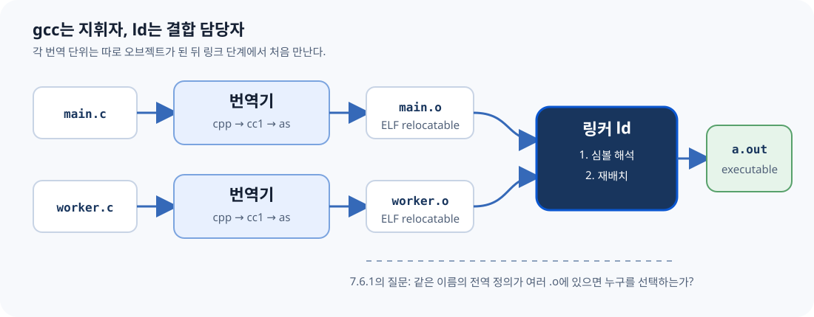
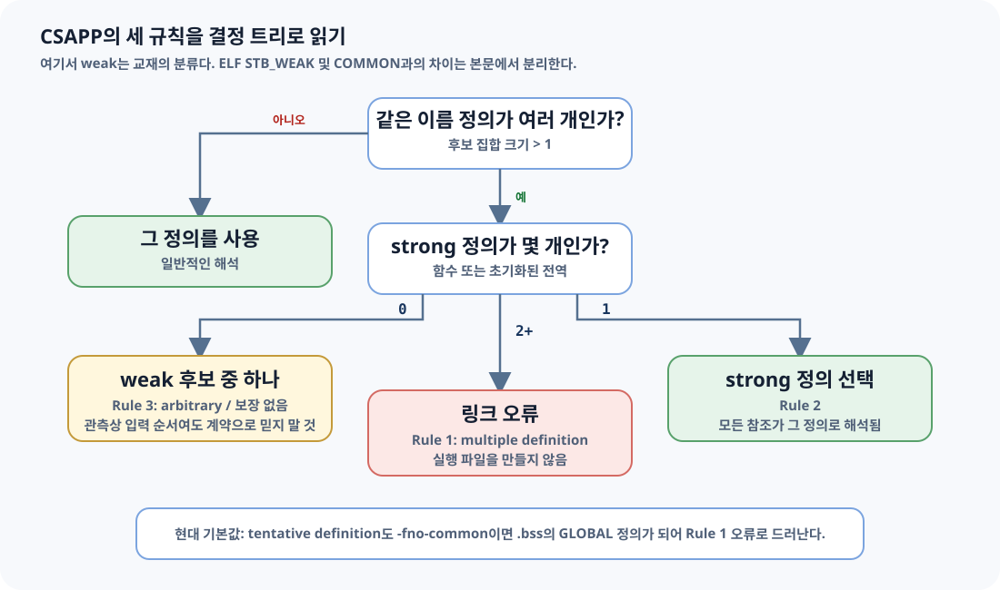
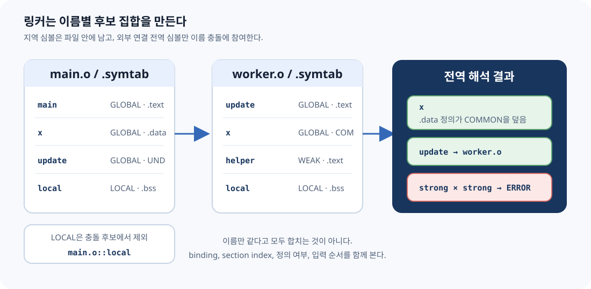
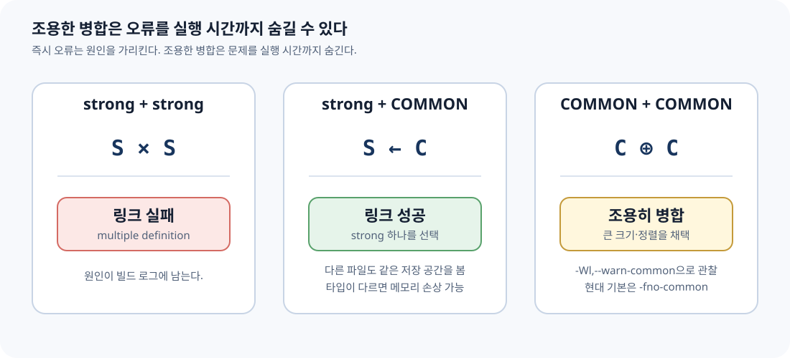
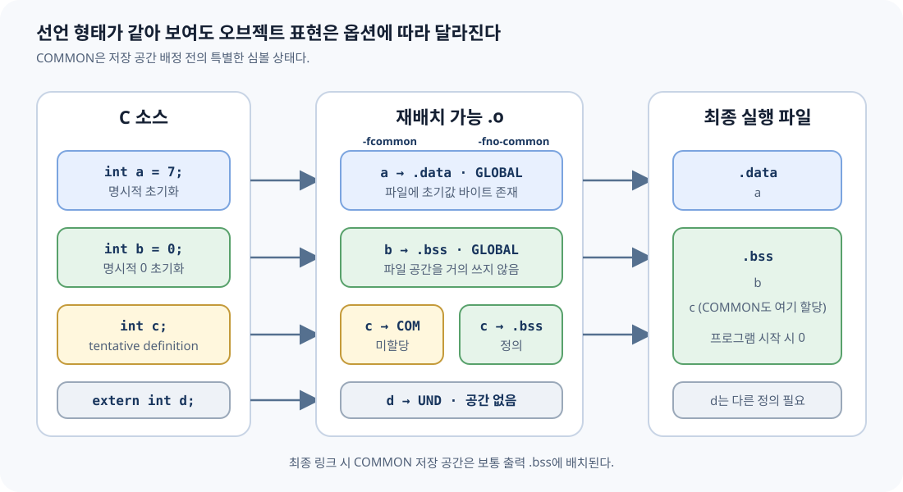
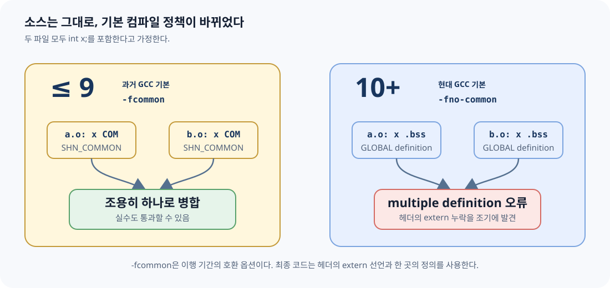

3판 7.6.1의 논점, 세 규칙, 다섯 코드 사례, Practice Problem 7.2를 재서술한다.
00
무엇이 책이고, 무엇이 현대 보충인가
C11 초안, System V ELF ABI, GCC·Clang·GNU ld·lld 공식 문서와 정오표를 뜻한다.
교재와 현대 도구 사이의 차이, 실험 해석, 실무 안전 규칙을 명시적으로 덧붙인다.
NOTE · 절 제목 확인
CSAPP 3판의 정확한 제목은 How Linkers Resolve Duplicate Symbol Names다. 2판의 제목은 How Linkers Resolve Multiply Defined Global Symbols이었다. 이 노트는 3판을 기준으로 한다.
WARNING · 2015년 책의 기본값과 2026년 도구는 다르다
책의 weak 전역 예제는 과거 GCC의 -fcommon 기본 동작을 전제로 한다.
GCC 10부터 기본값은 -fno-common이다. 따라서 책의 “조용히 합쳐진다”는
예제를 현재 GCC에서 그대로 실행하면 기본 설정에서는 링크 오류가 난다.
전체 근거와 조사 한계는 references.md, 전체 검증 로그는 verified-linux-aarch64.txt에 있다.
01
ELI5: 이름표가 겹친 물품 창고
ELI5
여러 반이 물품을 창고에 맡긴다고 하자. 상자마다 x라는 이름표가 붙어 있다.
“이게 최종 물건”이라고 확정한 상자 두 개가 오면 창고지기는 어느 것을 써야 할지 몰라
작업을 중단한다. 하나만 확정 상자이고 나머지가 “자리만 필요해요” 상자라면 확정 상자를
쓴다. “자리만 필요해요” 상자만 여러 개라면 하나의 자리로 합친다.
확정 상자 둘
strong + strong
링크 오류
확정 + 임시
strong + weak/common
strong 선택
임시 상자들
weak/common + weak/common
하나로 병합 또는 하나 선택
GOTCHA
비유의 “임시 상자”는 한 종류가 아니다. 교재의 weak 분류, ELF의
STB_WEAK, ELF의 SHN_COMMON은 서로 겹치지만 같은 말은 아니다.
뒤에서 심볼 표의 실제 열로 분리한다.
02
REMIND: 7.6.1에 도착하기 전 알아야 할 것
REMIND · 7.1–7.5 압축 복원
각 번역 단위(translation unit)는 따로 컴파일된다. 컴파일러는 다른
.c 파일의 내부를 보지 못한 채 재배치 가능 오브젝트
(relocatable object file)를 만든다. 여러 파일의 전역 이름이 처음
만나는 시점은 링크 단계다.

링커가 하는 두 가지 일
1. 심볼 해석 (symbol resolution)
각 심볼 참조를 정확히 하나의 정의에 연결한다. 7.6.1의 주제다.
2. 재배치 (relocation)
합쳐진 코드와 데이터의 최종 주소를 정하고 참조 위치를 고친다. 7.7의 주제다.
세 종류의 링커 심볼
global definition
모듈이 정의하고 다른 모듈에서도 참조할 수 있는 비정적 함수와 전역 변수.
local definition
static으로 내부 연결을 갖는 함수·파일 범위 변수. 같은 이름이 다른 오브젝트에 있어도 충돌하지 않는다.external reference
현재 모듈이 참조하지만 정의하지 않은 심볼. ELF에서는 보통
SHN_UNDEF.COMMON MISTAKE · local symbol ≠ local variable
여기서 local symbol은 오브젝트 파일 밖에서 보이지 않는 심볼이다. 함수 안 자동 지역 변수는 보통 런타임 스택이나 레지스터에 놓이며 링커의 전역 이름 해석 대상이 아니다.
03
CSAPP의 strong / weak 세 규칙
CSAPP 교재는 Linux 컴파일 시스템의 중복 이름 처리를 다음 모델로 설명한다. 함수와 초기화된 전역 변수는 strong, 초기화되지 않은 전역 변수는 weak로 분류한다.
같은 이름의 강한 정의는 하나만 존재해야 한다. 함수 중복 정의도 여기에 포함된다.
strong 하나와 weak 여러 개가 있으면 strong 정의가 모든 참조를 만족한다.
weak만 여러 개면 어느 하나를 고른다. 어떤 것을 고를지 프로그램이 가정하면 안 된다.

WARNING · arbitrary는 random이 아니다
“아무 weak나 고른다”는 매 실행마다 무작위라는 뜻이 아니다. 특정 링커 버전과 입력 순서에서는 결과가 반복될 수 있다. 뜻은 소스 언어 수준에서 이식 가능한 선택을 보장하지 않는다는 것이다.
04
가장 중요한 구분: 교재의 weak와 ELF의 WEAK
OFFICIAL · ELF ABI
ELF 심볼 표의 Bind에는 LOCAL, GLOBAL,
WEAK가 있다. SHN_COMMON은 binding이 아니라
특별한 section index다.
GOTCHA · 책의 weak 분류를 readelf의 WEAK로 번역하지 말 것
GCC -fcommon에서 파일 범위 int x;를 컴파일하면 실제 출력은
대개 OBJECT GLOBAL DEFAULT COM x다. 즉 Bind=GLOBAL,
Ndx=COM이며 Bind=WEAK가 아니다.
| C 표기 | 교재 모델 | 현대 GCC ELF 관측 | nm |
중복 시 |
|---|---|---|---|---|
int f(void) {…} |
strong | FUNC GLOBAL .text |
T |
두 정의면 오류 |
int x = 7; |
strong | OBJECT GLOBAL .data |
D |
두 정의면 오류 |
int x = 0; |
strong | OBJECT GLOBAL .bss |
B |
두 정의면 오류 |
int x; + -fcommon |
weak | OBJECT GLOBAL COM |
C |
COMMON 병합 가능 |
int x; + -fno-common |
책 이후 기본값 | OBJECT GLOBAL .bss |
B |
여러 번역 단위면 오류 |
__attribute__((weak)) |
명시적 weak | OBJECT WEAK .data |
V |
GLOBAL 정의가 우선 |

실제 출력으로 확인
GCC 13.3 · -fcommonOBSERVED
$ readelf -Ws sc-worker.o | grep ' x$'
16: 0000000000000004 4 OBJECT GLOBAL DEFAULT COM x
$ nm -S sc-worker.o
0000000000000004 0000000000000004 C x명시적 ELF weak attributeOBSERVED
$ readelf -Ws ew-provider.o | grep ' hook$'
17: 0000000000000000 4 OBJECT WEAK DEFAULT 3 hook
$ nm -S ew-provider.o
0000000000000000 0000000000000004 V hook
05
CSAPP 7.6.1의 다섯 사례
CSAPP 책의 코드 표현을 장문 복제하지 않고, 각 두 모듈이 무엇을 정의하고 어떤 규칙이 적용되는지 빠짐없이 재구성했다. 실행 가능한 변형은 examples/에 있다.
사례 1 · main 함수가 두 개
두 모듈 모두 main 함수를 정의한다. 함수 정의는 strong이므로 Rule 1에 따라
링크 오류다. “어느 main이 먼저인가”를 따질 단계가 아니다.
duplicate-functionOBSERVED · GNU ld
multiple definition of `helper';
df-main.o: first defined here
collect2: error: ld returned 1 exit status사례 2 · 초기화된 전역 x가 두 개
두 모듈이 모두 int x = 15213; 같은 초기화된 전역을 정의한다. 둘 다
strong이므로 함수 중복과 똑같이 링크 오류다. 값이 우연히 같아도 동일한 저장 객체라는
증거가 아니므로 허용되지 않는다.
사례 3 · 초기화된 x + 초기화되지 않은 x
과거 기본값 또는 -fcommon에서는 첫 모듈의 초기화된 x가
strong, 다른 모듈의 int x;가 COMMON 후보가 된다. strong 정의가 선택되고,
다른 모듈의 함수도 그 같은 저장 공간을 쓴다. 책의 결과처럼 update()가
호출자 모르게 값을 바꿀 수 있다.
strong-commonOBSERVED
$ nm -S sc-main.o sc-worker.o | grep ' x$'
0000000000000000 0000000000000004 D x
0000000000000004 0000000000000004 C x
$ ./strong-common
x = 15212사례 4 · 초기화되지 않은 x가 두 개
-fcommon에서는 두 tentative definition이 COMMON으로 나온다. GNU ld는
하나의 저장 공간으로 병합하며, --warn-common을 주면 이 조용한 병합을
경고로 드러낼 수 있다. 현대 기본 -fno-common에서는 둘 다
.bss 정의이므로 오류다.
common-commonOBSERVED · -fcommon
$ gcc -Wl,--warn-common cc-main.o cc-worker.o -o common-common
ld: cc-worker.o and cc-main.o: warning: multiple common of `x'
$ ./common-common
x = 15212사례 5 · 이름은 같고 타입은 다르다
한 모듈은 int x, 다른 모듈은 double x라고 믿는다. 링커의 주된
해석 키는 C 타입이 아니라 심볼 이름과 오브젝트 메타데이터다. -fcommon에서
strong int가 선택되면, 다른 모듈은 같은 주소에 8바이트 double을
쓸 수 있다. 인접 객체가 덮일 수 있는 심각한 버그다.
WARNING · 출력 값은 시스템 의존
책의 x86-64 예시는 x와 바로 다음 y가 함께 손상되는 한 배치를
보여 준다. CSAPP 공식 정오표는 정확한 손상 값이 시스템 의존이라고 명시한다.
본 aarch64 실험에서는 x=0이 되었지만 y는 유지됐다.
어느 쪽도 프로그램이 의존할 수 있는 결과가 아니다.
common-mismatchOBSERVED · aarch64
ld: warning: common of `x' overridden by definition
ld: warning: alignment 4 of normal symbol `x' is smaller than 8
ld: warning: alignment discrepancies can cause real problems
$ ./common-mismatch
x = 0x0 y = 0x3b6c
06
tentative definition, COMMON, .bss, .data
OFFICIAL · C11 §6.9.2 파일 범위 객체 선언에 initializer가 없고 적절한 storage-class 조건을 만족하면 tentative definition(잠정 정의)이다. 같은 번역 단위 안에 실제 외부 정의가 끝까지 없다면 0 initializer를 가진 정의처럼 동작한다.
NOTE · 언어 의미와 파일 배치는 다른 층
C 표준은 “프로그램 시작 시 0으로 초기화된 객체”라는 의미를 규정한다.
그것을 오브젝트 파일에서 COMMON으로 낼지 .bss로 낼지는 컴파일러와
플랫폼의 구현 선택이다.

| 표현 | 정의/선언 | -fcommon 입력 .o |
-fno-common 입력 .o |
최종 메모리 |
|---|---|---|---|---|
int a = 7; |
외부 정의 | .data |
.data |
쓰기 가능한 초기화 데이터 |
int b = 0; |
외부 정의 | .bss |
.bss |
0으로 초기화 |
int c; |
tentative definition | SHN_COMMON |
.bss |
최종적으로 보통 .bss |
extern int d; |
선언/참조 | SHN_UNDEF |
SHN_UNDEF |
다른 정의가 제공해야 함 |
static int e; |
내부 연결 tentative | .bss LOCAL |
.bss LOCAL |
모듈 전용 0 초기화 객체 |
COMMON MISTAKE · “COMMON section”을 실제 섹션이라고 생각하기
ELF SHN_COMMON 심볼은 아직 어느 입력 섹션에도 할당되지 않았다.
st_value는 주소가 아니라 정렬 조건이고, st_size가 필요한
바이트 수다. GNU ld 스크립트의 *(COMMON)은 이런 심볼을 출력
.bss에 배치하기 위한 특별 표기다.
07
GCC 10: 실수를 허용하던 기본값을 뒤집다
OFFICIAL · GCC 10 PORTING GUIDE
GCC 10은 C에서도 -fno-common을 기본으로 바꿨다. 헤더에
int x;를 써 여러 파일에서 정의를 만들어 버리는 실수를 링크 오류로
드러내고, 일부 target에서는 더 효율적인 전역 접근도 가능하게 한다.

과거 의미 재현
-fcommonPASS
gcc -fcommon -c main.c worker.c
gcc main.o worker.o -o before
./before
x = 15212현대 기본 의미 재현
-fno-commonEXPECTED ERROR
gcc -fno-common -c main.c worker.c
gcc main.o worker.o -o after
multiple definition of `x'Clang 18에서도 플래그의 의미는 같다
Clang 18.1.3 + lld 18.1.3OBSERVED
$ clang -c main.c worker.c
# 기본 출력: x는 각 .o의 .bss GLOBAL 정의 → duplicate symbol 오류
$ clang -fcommon -c main.c worker.c
# x는 GLOBAL COM → 링크 성공, x = 15212
$ clang -fno-common -c main.c worker.c
# x는 각 .o의 .bss GLOBAL 정의 → duplicate symbol 오류고치는 방법
전역 변수의 단일 정의 패턴RECOMMENDED
/* state.h: 공간을 만들지 않는 선언 */
extern int x;
/* state.c: 프로그램 전체에서 정확히 하나인 정의 */
int x = 0;
/* user.c: 헤더를 통해 같은 객체를 참조 */
#include "state.h"COMMON MISTAKE · 링크가 되게 하려고 -fcommon만 되돌리기
레거시 이행을 위해 임시로 쓸 수는 있지만, 중복 정의 설계를 그대로 숨긴다.
먼저 헤더의 정의를 extern 선언으로 바꾸고 한 구현 파일에만 정의를 둔다.
08
실험실: nm, readelf, objdump로 증거 읽기
아래 출력은 verify-elf.sh를
Ubuntu 24.04 aarch64 컨테이너에서 실행한 결과다. macOS의 gcc는 Apple
Clang이며 Mach-O를 만들기 때문에, ELF 설명과 섞지 않았다.
nm 한 글자 해독표
D / d
초기화된 data. 대문자는 보통 global, 소문자는 local.
B / b
BSS의 0 초기화·미초기화 데이터.
C
아직 할당되지 않은 common symbol.
T / t
text 영역의 함수·코드.
U
현재 오브젝트에는 정의가 없는 참조.
V / W
실제 weak object / weak non-object.
같은 소스, 다른 section index
storage-layout/symbols.cOBSERVED
$ nm -S layout-common.o
0000000000000000 0000000000000004 D initialized
0000000000000004 0000000000000004 C tentative
0000000000000000 0000000000000004 B zero
$ nm -S layout-nocommon.o
0000000000000000 0000000000000004 D initialized
0000000000000000 0000000000000004 B tentative
0000000000000004 0000000000000004 B zerostatic은 이름을 파일 안에 가둔다
static-internalOBSERVED
$ ./static-internal
main.x=11 other.x=22
$ nm -a static-internal | grep ' [bd] x$'
0000000000020010 d x
0000000000020014 d x
소문자 d는 두 x가 각각 local data symbol임을 보인다.
소스 이름은 같지만 외부 연결 이름 공간에 나오지 않으므로 충돌하지 않는다.
직접 재현
macOS에서도 ELF를 똑같이 재현DOCKER
cd chapter07
./verify-in-docker.sh
# HTML의 로컬 링크·필수 블록도 검사
node verify-html.mjsNOTE · .o를 커밋하지 않는 이유
실습 노트는 오브젝트 내용을 직접 참조하지만, 이 산출물은 CPU·OS·컴파일러에
의존한다. 재생성 명령과 검증 텍스트는 추적하고, examples/build/의
바이너리는 추적하지 않는다.
09
GNU ld와 lld: 규칙은 같고 진단은 다르다
GNU ld 2.42
strong + strongERROR
multiple definition of `conflict';
ss-main.o: first defined herelld 18.1.3
strong + strongERROR
duplicate symbol: conflict
>>> defined at main.c:3
>>> defined at other.c:1둘 다 기본적으로 중복 strong 정의를 거부한다. lld는 각 정의의 소스 위치를 구조적으로 보여 줬고, GNU ld는 “first defined here” 형태로 보여 줬다.
실제 WEAK + WEAK 입력 순서 실험
GNU ld와 lld에서 같은 관측OBSERVED, NOT GUARANTEED
$ cc main.o left.o right.o -o left-first && ./left-first
choice=11
$ cc main.o right.o left.o -o right-first && ./right-first
choice=22
$ clang -fuse-ld=lld main.o left.o right.o -o lld-left && ./lld-left
choice=11
$ clang -fuse-ld=lld main.o right.o left.o -o lld-right && ./lld-right
choice=22WARNING · 관측을 계약으로 승격하지 말 것
이 버전의 두 링커는 먼저 입력된 weak 정의를 골랐다. 그러나 ELF ABI는 weak 동작의 일부를 implementation-defined로 두고, 교재도 “어느 weak든”이라고 표현한다. 입력 순서로 기능 선택을 설계하지 말고, 명시적 strong 정의나 등록 메커니즘을 사용한다.
escape hatch: --allow-multiple-definition
GNU ld와 lld 공식 문서는 이 옵션을 주면 여러 정의를 오류로 처리하지 않고 첫 정의를 쓴다고 설명한다. 바이너리 분석·특수 빌드에는 쓸 수 있지만, 일반 애플리케이션의 중복 정의 버그를 고치는 수단은 아니다.
10
QUIZ · EXERCISE · 면접 질문
QUIZ
-
int x = 0;은 초기값이 0이므로 weak인가?정답 보기
아니다. 교재 모델에서 initializer가 있으므로 strong이다. ELF에서는 보통GLOBAL객체로.bss에 놓인다. -
readelf의GLOBAL DEFAULT COM은 ELF weak symbol인가?정답 보기
아니다. binding은GLOBAL이고 section index가SHN_COMMON이다. 실제 weak binding은WEAK로 표시된다. -
두 파일에
static int x;가 있으면 왜 링크 오류가 아닌가?정답 보기
static파일 범위 객체는 내부 연결을 가진다. 각 오브젝트의 local symbol이라 서로 다른 이름 공간에 있다. -
GCC 10 이후 여러 파일의
int x;가 기본 설정에서 실패하는 이유는?정답 보기
기본-fno-common이 각 tentative definition을 오브젝트의.bssGLOBAL 정의로 내므로, 링커가 여러 strong 정의로 보고 거부한다.
Practice Problem 7.2 대응
A. 함수 main + tentative object main
함수 정의가 strong, tentative object가 weak/common인 과거 모델에서는 두 참조 모두 함수 정의 쪽에 연결된다. 그러나 함수와 객체가 같은 이름을 공유하는 설계 자체가 타입 안전하지 않다.
B. 함수 main + 초기화된 object main
둘 다 strong이므로 Rule 1 링크 오류다.
C. tentative int x + initialized double x
과거 모델에서는 initialized
double strong 정의가 선택되어 두 참조가 그 정의로 해석된다. C 타입 관점에서는 위험한 불일치다. 현대 -fno-common 기본에서는 두 정의로 오류가 난다.EXERCISE
examples/storage-layout/symbols.c에static int s;와int z = 0;을 추가하고readelf -Ws의 Bind/Ndx를 예측한 뒤 확인한다.common-common의 두x를 각각char x[4],char x[32]로 바꾸고-fcommon -Wl,--warn-common에서 GNU ld가 어떤 크기를 택하는지 확인한다.explicit-weak의 strong 정의를 제거하고 weak 정의만 남긴 뒤nm과 실행 결과를 비교한다.- 헤더에
int counter;를 둔 잘못된 3파일 프로그램을 만들고,extern+ 단일 정의 패턴으로 고친다.
면접에서 자주 이어지는 질문
컴파일 오류와 링크 오류를 구분해 보라
각 번역 단위의 문법·타입 검사는 컴파일러, 번역 단위 사이 정의 연결은 링커가 담당한다.
.bss가 파일 크기를 아끼는 이유는?
0 바이트를 모두 저장하지 않고 메모리 크기만 기록해 로더가 0으로 준비할 수 있다.
weak symbol은 언제 쓰나?
시스템 코드의 기본 hook, 선택적 override 등에 쓰인다. ELF ABI도 애플리케이션의 무분별한 weak 사용을 경고한다.
왜 헤더에는 extern인가?
헤더는 여러 번역 단위에 복제되므로 공간을 만드는 정의가 아니라 하나의 정의를 가리키는 선언이어야 한다.
11
용어 사전: 영문을 기준으로 고정하기
symbol resolution
심볼 해석. 각 심볼 참조를 하나의 정의에 연결하는 링크 단계.
duplicate symbol name
중복 심볼 이름. 여러 입력 모듈이 같은 외부 이름을 정의한 상태.
strong symbol
강한 심볼. CSAPP 모델에서 함수와 초기화된 전역. 같은 이름의 strong은 하나만 허용.
weak symbol
약한 심볼. 문맥을 밝혀야 한다. CSAPP 학습 모델인지 ELF
STB_WEAK인지 구분한다.tentative definition
잠정 정의. 파일 범위에서 initializer 없이 나온 객체 선언의 C 표준 개념.
common symbol
공통 심볼. ELF relocatable object에서 아직 저장 공간이 배정되지 않은
SHN_COMMON 심볼.binding
바인딩. ELF의
STB_LOCAL, STB_GLOBAL, STB_WEAK 같은 가시성·우선순위 속성.linkage
연결. C 식별자가 다른 범위·번역 단위의 같은 이름 선언과 같은 대상을 가리키는지 정하는 언어 개념.
translation unit
번역 단위. 전처리가 끝난 하나의 소스 단위. 각 단위가 독립적으로 컴파일된다.
relocatable object file
재배치 가능 오브젝트 파일. 심볼·재배치 정보를 가진 링커 입력
.o.multiple definition
다중 정의. 하나여야 하는 외부 strong 정의가 둘 이상인 링크 오류.
internal linkage
내부 연결. 파일 범위
static처럼 현재 번역 단위 안에서만 같은 대상을 가리킴.
12
책의 절·예제·그림 대응표
| CSAPP 3e 7.6.1 요소 | 책의 역할 | 이 문서 | 재현 실습 |
|---|---|---|---|
| 절 도입 | 여러 모듈의 같은 전역 이름 문제 제기 | §2–§4 | 전체 |
| Strong/weak Rule 1–3 | Linux 링커 선택 규칙 | §3 결정 트리 | strong-strong, common-common, weak-weak |
foo1/bar1 | 중복 main 함수 | §5 사례 1 | duplicate-function |
foo2/bar2 | 초기화된 x 중복 | §5 사례 2 | strong-strong |
foo3/bar3 | strong + uninitialized global | §5 사례 3 | strong-common |
foo4/bar4 | uninitialized global 둘 | §5 사례 4 | common-common |
foo5/bar5 | int/double 타입 불일치와 손상 | §5 사례 5 | common-mismatch |
COMMON과 .bss 설명 | 컴파일러가 결정을 링커에 미루는 이유 | §6 | storage-layout |
| Practice Problem 7.2 | REF → DEF 규칙 연습 | §10 | QUIZ |
| 번호 Figure | 7.6.1에는 번호가 붙은 교재 Figure가 없다. 본문 FIGURE N1–N6은 모두 새 설명용 SVG다. | ||
NOTE · 누락 점검
절의 세 규칙, 다섯 코드 사례, 타입 불일치 경고, -fno-common 조언,
COMMON/.bss 결론, Practice Problem 7.2를 모두 대응했다.
7.6 직전의 C++/Java name mangling aside는 7.6.1 본문 밖이므로 용어 확장 범위에
포함하지 않았다.
13
Beyond CSAPP: 2026년에 가져갈 규칙
빌드 성공을 안전성으로 착각하지 않는다
-fcommon의 조용한 병합은 과거 호환 동작이지 타입 검사가 아니다. 링크 성공 뒤에도 ABI 불일치가 남을 수 있다.
경고를 링크 계약의 일부로 본다
레거시 코드 조사에는 -Wl,--warn-common이 숨은 병합을 드러낸다. CI에서는 관련 경고를 무시하지 않는다.
weak는 시스템 메커니즘으로 제한한다
기본 구현이나 선택적 hook에는 유용하지만, 애플리케이션 로직을 입력 순서에 의존시키지 않는다.
도구 출력에서 층을 읽는다
C의 linkage, ELF의 binding, section index, linker의 선택 규칙을 한 단어 “weak”로 뭉개지 않는다.
5분 디버깅 순서
- 오류의 심볼 이름과 각 정의 파일을 확인한다.
nm -A로 모든 후보의 글자(D/B/C/V/W/T)를 본다.readelf -Ws로Bind와Ndx를 분리해 본다.- 헤더에 공간을 만드는 정의가 들어갔는지 찾는다.
extern선언 + 단일 정의로 고친 뒤-fno-common에서 다시 링크한다.
한 문장 결론
같은 전역 이름이 여러 파일에 보이면, 링커의 관용에 기대지 말고 정의의 소유자를 하나로 만든다.